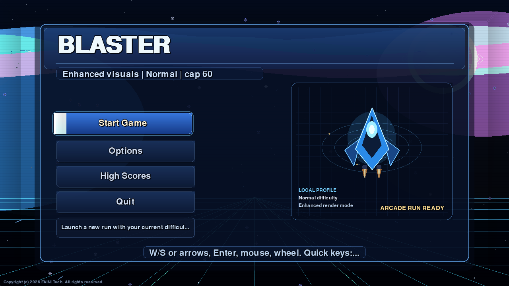
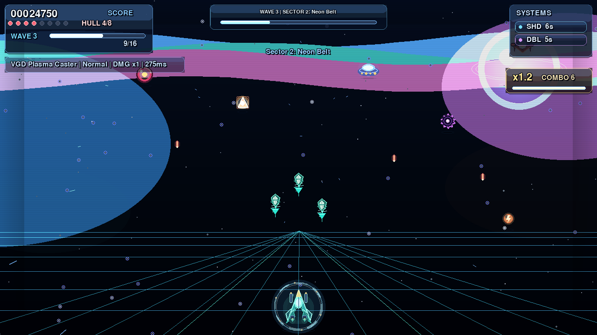

Selected software work by Kamil Kerimov.
Telegram automation, a Pygame desktop game, and this tested portfolio frontend.
Telegram automation, a Pygame desktop game, and this tested portfolio frontend.
Source-available Telegram service for Trendyol price tracking: user watchlists, alert rules, price history, compare/export flows, recommendations, admin tools, and localization.

Python and Pygame arcade shooter with animated menus, a 1280x720 scaled playfield, quality presets, wave progression, boss phases, and local user data.


GitHub currently includes 11 public repositories: the portfolio, Trendyol tracker, Blaster, and earlier JavaScript/CSS/HTML practice builds.
Public source, commit history, typed modules, end-to-end checks, and Lighthouse evidence for this site.
Designed and built end to end: layout, theme behavior, command navigation, responsive states, and release checks.